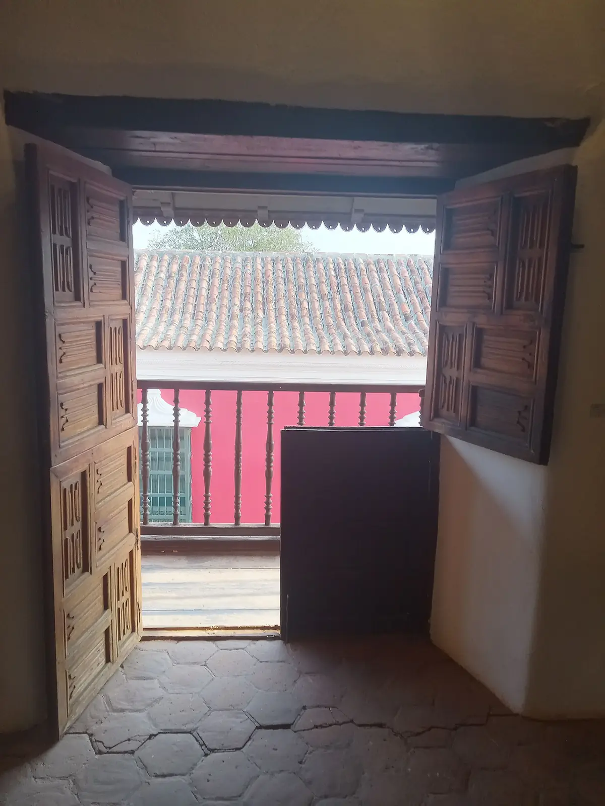
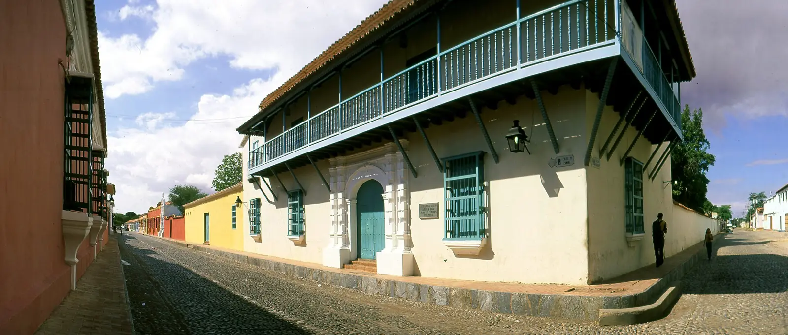
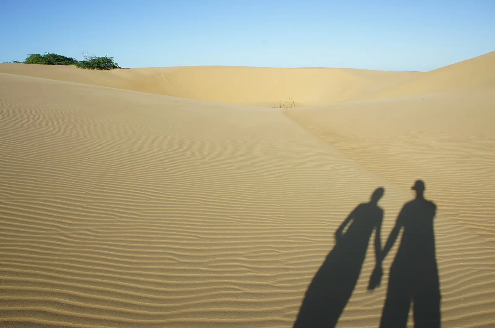
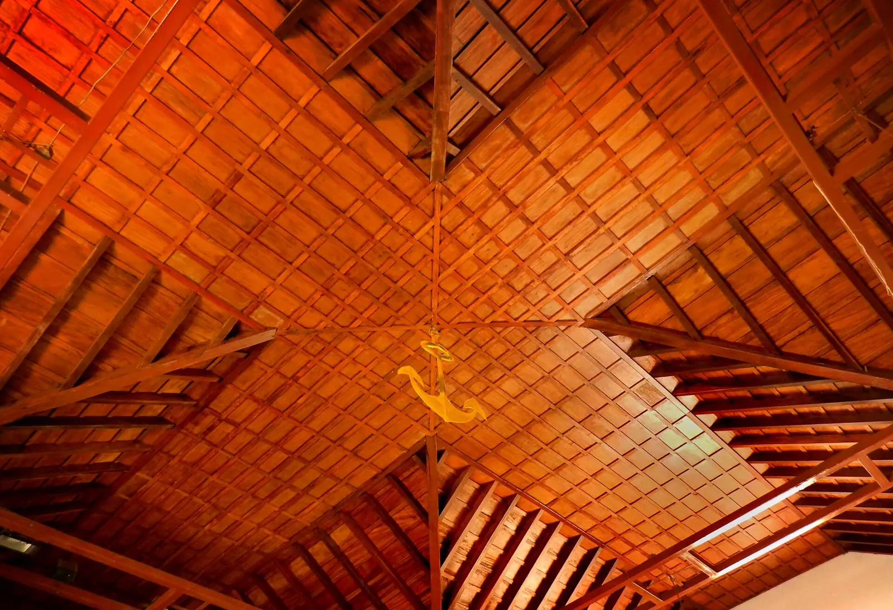

Coro, en fotos
Fotos referenciales de la ciudad mientras llegan las de la posada. Toque una para verla grande.
 Casa colonial con su portada, en Coro
Casa colonial con su portada, en Coro Patio de la Casa de las Ventanas de Hierro
Patio de la Casa de las Ventanas de Hierro Casa de las Ventanas de Hierro, en la zona colonial
Casa de las Ventanas de Hierro, en la zona colonial
Interior de la Casa Balcón de los Arcaya
Calle de Coro con casa de balcón de madera
Sombras de una pareja en los Médanos de Coro
Techo de madera de la Catedral de Coro Calle del Correo, en Coro
Calle del Correo, en CoroCréditos de las fotos
Fotos de Wikimedia Commons: Calle empredrada de Coro, Juan Carlo Castillo Ortega (CC BY-SA 3.0); Portada casa colonial, Coro, Janethrodri (CC BY-SA 4.0); La Casa del Sol, en la Calle Federación, Carlos E. Perez S.L (CC BY-SA 4.0); Dunas en el Parque nacional Médanos de Coro, Nehe009 (CC BY-SA 4.0); Atardecer en la Vela de Coro, Danielamruiz (CC BY-SA 3.0); Cerro Santa Ana, Paraguaná en Venezuela, Aramburu Carlos (CC BY 4.0); Habitacion cama matrimonial2, Hotel & Suites Mo Sak (CC BY-SA 3.0); TV-009-0128 (14262946025), André Carrotflower (CC BY-SA 2.0); Double Room at Hotel San Julio, Celestun, Yucatan, Bernard DUPONT (CC BY-SA 2.0); Casa colonial Coro, Janethrodri (CC BY-SA 4.0); Patio Casa de las Ventanas de Hierro, Janethrodri (CC BY-SA 4.0); La Casa de las Ventanas de Hierro (Coro, Venezuela), Micpol (CC BY 3.0); Casa Balcón de los Arcaya (interior), Zerojosefer (CC BY-SA 4.0); Falcón, panorámicas (2003) 02, LBM1948 (CC BY-SA 4.0); En los Médanos de Coro, Venezuela, Luigino Bracci (CC BY 2.0); Ancla en el Techo de la Catedral, Juan Carlo Castillo Ortega (CC BY-SA 3.0); Calle del Correo en Coro, Juan Carlo Castillo Ortega (CC BY-SA 3.0). Foto de las mascotas: Unsplash.